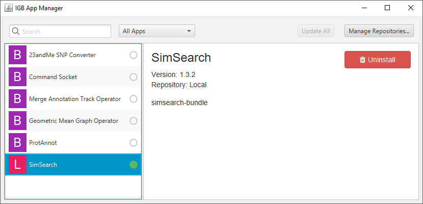
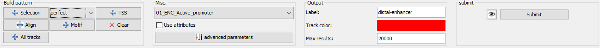
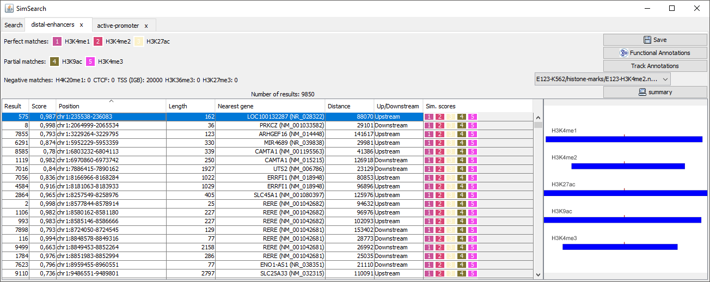
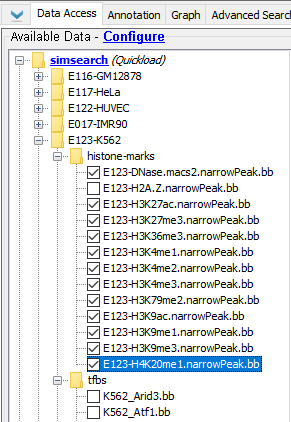
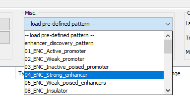
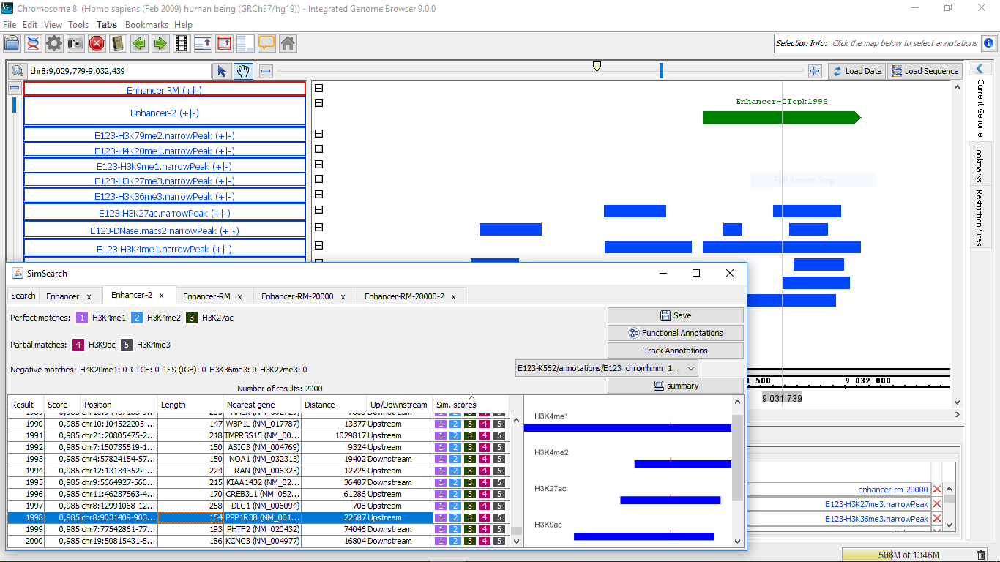
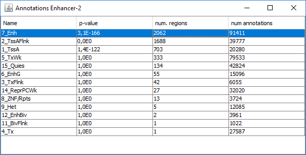

SimSearch is a pattern-search algorithm that provides biologists with the ability, once they identify an interesting genomic pattern, to look for similar occurrences in the data, thus facilitating genomic data access and use. For example, such patterns can describe gene expression regulatory DNA areas including heterogeneous (epi)genomic features (e.g. histone modification and/or different transcription factor binding regions). It is possible to define complex patterns based on perfect matches in genome tracks (regions that must match), partial matches (regions that are allowed to be absent), and negative matches (for instance to search for regions distant from transcription start sites).

The SimSearch algorithm has been developed for the GenData
project as a collaboration between
University of Bologna and Politecnico di Milano. The SimSearch App
for IGB is developped by @arnaudceol for the Istituto Italiano di
Tecnologia. It is now part of the DATA-DRIVEN GENOMIC COMPUTING
(GeCo)  project.
project.
Project URL: http://www-db.disi.unibo.it/research/GenData/SimSearch
Installation
Install the Integrated Genome Browser (IGB)
The SimSearch App is a plugin for the Integrated Genome Browser (IGB) that can be downloaded from http://bioviz.org/igb/;
Add the GenData repository:
From IGB, go to the "plug-ins" tab and launch the app manager.
{kind=link}
Add the GenData repository: press the "add" button, and insert "SimSearch" for name, and the url: https://arnaudceol.github.io/simsearch/plugins/. Then select the SimSearch plugin and press "install". A new tab will appear in the tab panel in IGB.
Add the SimSearch Quickload server
In order to make it easy to test the SimSearch app, we have compiled a Quickload repository with public data (mostly from ENCODE and Roadmap projects) for the human hg19 genome.

To access this repository go to "data access", "configure", "add...", and add the repository: name: "SimSearch" url: "http://cru.genomics.iit.it/simsearch-quickload/" Remember to select species "Homo sapiens", version "H_sapiens_Feb_2009" in order to see the datasets.
Video:
Have a look at https://www.youtube.com/watch?v=jW65ope1h1o to see the SimSearch app in action:
Annotation of the results:
In order to to facilitate the analyses of the results, it is possible to annotate them automatically with different sets of information:
| Type | Description |
|---|---|
| Closest gene | Gene whose TSS is closer to the center of the matching region of the first perfect match dataset, or to the TSS if it has been selected as one dataset of type "perfect match". |
| Functional annotations | Use Pantherdb web service to see if the genes identified in the results (closest genes) are enriched in a particular pathway or biological process. |
| Annotation from tracks | Use annotations from a track loaded in IGB and see if the region that overlap with the results are enriched in a particular annotation. For instance, it is possible to load the genome segmentation from ChromHMM or Segway to see if the results are associated to a particular chromatin state. |
| Pattern combinations | When a search involved several partial match, retrieve the dataset that are found more often together. |
Usage:
Main panel
Build panel
{kind=link}
- + Selection: Add selected elements to the pattern. It can be one or more regions selected in the browser, or one or more tracks (select the track name on the left of the browser).
- Dataset type: Select wether the datasets added should be of type perfect match, partial math, negative match or any other type. This can be changed later in the pattern table.
- Align: Use to align all the selected datasets. This is useful is the user has selected the datasets from different parts of the browser, but want them to be found at th esame position.
- Motif: Search for DNA motif, for instance a known transcription factor motif such as the e-box. The motif should be entered as a string (only nucleotide letter: A, C, G ant T). Note that this will only work if the DNA sequence has already been loaded in the browser.
- TSS: add the transcription start sites as a dataset.
- Clear: Remove all datasets from the pattern.
- All tracks: Add all tracks as datasets, for instance if all the histone marks ChIP-seq tracks have been loaded. The datasets can be individually edited or removed later.
Misc.
- Load pre-defined pattern: load a predefined pattern (chromatine states inferred from the results of ChromHMM and Segway). The app will try to associate each dataset to a track according to both names. The user should verify that the mapping is correct.
- Use attributes: use attributes of the target tracks when searching from the best match. The attributes are selected individually for each track (see below: edit button).
- Advanced parameters:
- Minimum similarity score of results: results with a lower score will be discarded
- Minimum alignment score for perfect match: individual datasett alignments with a score below this threshold will be discarded. We usually select a low threshold (e.g. 0.01), to avoid matching regions too distant ones from the others.
- Score for missing partial match: Score assigned when a partial dataset is missing. The lower the score, the more penalyzed will be the result for the absence of the dataset.
- Distance between regions based on: used to decide whether to take into consideration the distance between the centers of the region, or the distance between the right end of the first region and the start of the second region. Normalized centroid distance is similar to the centroid distance except it divides it by half the length of the region. It permits to avoid loosing information with large regions which may overlap although their centers are distant.
- Distance mismatch computed using: choose between L1 (Manhattan distance, uses the absolute value of the distance) and L2 (Euclidian distance, uses the square of the distance).
- Alignment score sigmoid midpoint: The sigmoid is the function used to calculate a similarity score between 0 (big distance) and 1 (distance = 0). The midpoint sets for which distance the similarity is equals to 0.5.
- Aligment score sigmoid slope:
- Use diversity: when calculating the similarity; it is possible to take in consideration the attributes of the genomic regions (e.g. fold enrichment).
- Is region length relevant for computing region similarity: If true, the matching regions should have similar length to give a high score.
{kind=link}
Output
- Label: name given to the tab and the new track.
- Track color: color for the new track created.
- Max results: maximum number of results.
Submit
- View pattern: display a graphical representation of the pattern.
- Submit: Submit the query.
Result panel
Pattern summary
This panel shows a summary of each dataset selected and its type. A color is associated randomly to each dataset, the same color will be used in the result table.
Result table
{kind=link}
- Score: Similarity score fo the match.
- Position: Position of the match: chromosome: center of the lefter dataset - sequence of the righter dataset.
- Length: distance between the centers of the lefter dataset and righter dataset.
- Closest gene: Gene which TSS is closest to the center of the root dataset, i.e. the first perfect match. If the TSS is itself a dataset, then its gene is selected.
- Distance: Distance between the center of the root dataset and the TSS.
- Up/down stream: Indicate if the match is up- or down-strem of the closest gene.
- Similarity scores: Each dataset is represented by a colored square, whose height is proportional to the score: a perfect match with a score of 1 is represented by a perfect square, while a match with a score of 0.5 is half its height, and an empty space indicates that no match was found.
- Alignment snapshot: a graphical representation of the pattern matching is displayed. The regions of the query pattern are displayed in red, the matching regions in blue. This allows to an immediate understanding of which regions are present or missing, and whether the regions are well aligned to the query pattern.
Actions:
- Save: save the results in a tab delimited file.
- Functional annotations:
Query Pantherdb to see if the genes identified in the results (closest genes) are enriched in a particular pathway or biological process.
- Name: Name of the pathway or biological process.
- p-value: P-value assigned to this enrichment.
- Number of genes: Number of genes from the results associated to this term.
- Gene list: List of genes in the results associated to this term.
- Track annotations: It is possible to select the annotations from one of the tracks loaded in the browser (for instance chromatine states identified by ChrommHMM or Segway, available from the SimSearch quickload server). The app counts the annotations that overlap with the results, and perform a Fisher exact test to assess the significance of this association (the total number of annotations of the same type is used as background).
- Summary: Show a summary of the results, i.e. the different "partial match" datasets which match together, and how many time they match together. Each individual combination can be selected to automatically create a new pattern that can be searched and analyzed. For a matter of clarity, smaller combinations are only displayed if they are found more often that more complex ones (for instance, if 100 instances of A + B + C and 100 instances of A + B are found, only A+ B + C is displayed).
Examples:
Distal enhancer:
In this example, we will look for distal enhancers (enhancers distant from the TSS), based on a pattern inferred from the results of Segway. We have already installed IGB, the SimSearch App and the SimSearch Quicklod server (see the installation page if you haven't yet).
Select the right genome

The data we will use has been aligned on the human genome build Hg19, also called NCBI17, or Feb 2009. We select the species Homo sapiens and the genome version H_sapiens_Feb_2019 in the right panel of IGB.
Load tracks
{kind=link}
We will load in new tracks the results of ChIP-seq experiments from ENCODE that are available from the SimSearch quickload server. We select this server in the data panel (bottom panel in IGB), and open the ans select the Histone Marks available for the K562 cell line, as well as CTCF binding regions.
Select the enhancer pattern
{kind=link}
Now we select an Enhancer pattern from the pre-defined pattern list. We choose the pattern named 04_ENC_Strong_Enhancer, which is inferred from the results of ChromHMM based on the data from ENCODE.
Add TSS

Because we want a distal enhancer, we will add the TSS dataset, by pressing the TSS button in the "Build pattern" area of the Search tab.

We can edit this dataset: first we specify that we want it to be a negative dataset (we don't want the results to contain a TSS), second we change the distance to 20000, to ensure that the results will be distant at least 20000 bases from the TSS.
Browsing the results
We are now ready to start the pattern search. The processing time depends on the number and complexity of the tracks, as well as the internet connection (remember that you can also use local files or a local quickload repository).
{kind=link}
The results are displayed in a table. If we click on any row (here row 1998), the app will autoimatically zoom into the corresponding region in the browser (See the region name Enhancer-2Topk1998), and display on the right the regions associated to each dataset (blue) and how they aligned to the original pattern (red).
Analyzing the results
It is possible to browse the results, inspect them visually in the browser, and also to run additional analyzes directly from the app.

We choose to compare our results to those of the original ChromHMM annotations. We load the results from ChromHMM from the SimSearch Quickload server, in the annotation section of the K562 section. From the result panel, we select this track and press the "annotations from track" button.
The result table shows, as expected, an enrichment for enhancer regions.